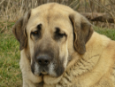

+34 678 37 68 44
uo271314@uniovi.es
Oviedo, Asturias ESP

Ingeniera Informática
+34 678 37 68 44
uo271314@uniovi.es
Oviedo, Asturias ESP
Me gusta mucho viajar. Entre los lugares que he visitado se encuentran Europa (España, Portugal, Francia, Alemania, Italia, Finlandia, Hungría, Grecia, Polonia...) y América del Norte (Nueva York).
Considero importante llevar un estilo de vida activo. Los deportes que he practicado durante más tiempo han sido bádminton, voleibol y judo, y algunos destacables serían el tenis, la natación o el baile moderno.
En general me gustan las actividades al aire libre y disfrutar de los animales.
